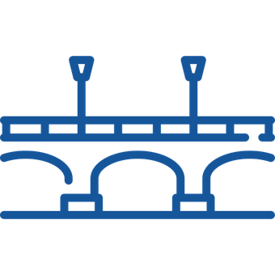
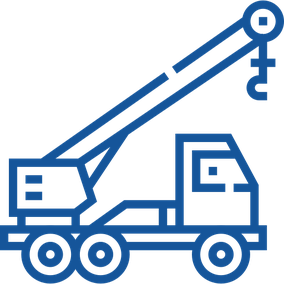
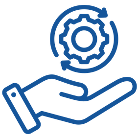
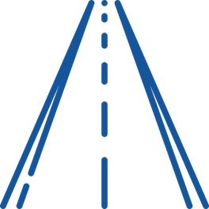
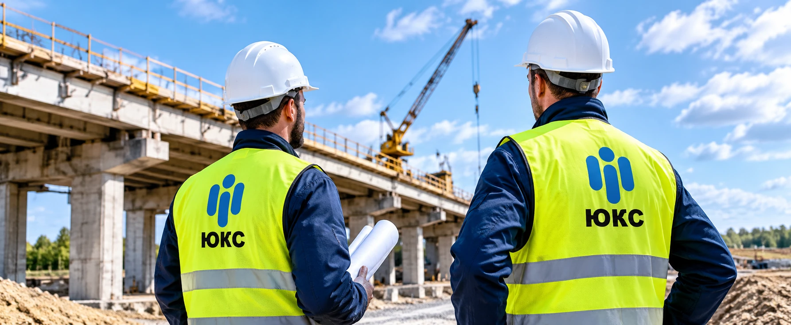
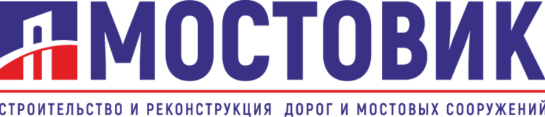
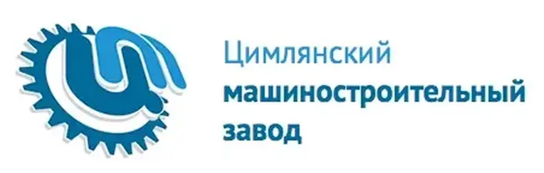

Строительная компания «ЮКС» —
строительство мостов и мостовых
сооружений
Реализация проектов транспортной инфраструктуры. Инженерный подход, профессиональная команда
и ответственность на каждом этапе строительства.
О компании
Строим инфраструктуру,
которая соединяет
ООО «ЮКС» — строительная компания, основанная в 2022 году.
Основное направление нашей деятельности —
строительство мостов и мостовых сооружений.
Мы объединяем инженерный подход, профессионализм команды
и внимание к качеству на каждом этапе реализации проекта.
- сотрудников
- 0000
- проектов
- 0000
- основана
- 2022

Направления деятельности
Наши компетенции
Полный цикл работ по строительству
мостов и мостовых сооружений.

строительство
мостов
мостовые
сооружения
реконструкция
и ремонт
дорожная
инфраструктура
Наши проекты
Реализованные
и текущие объекты
Портфолио компании - это качество,
проверенное временем.
Почему выбирают ЮКС
Надёжность начинается
с профессионализма

опытные
специалисты
ответственный
подход- современные
технологии 
партнёрство
и открытость

Карьера в ЮКС
Станьте частью нашей команды
Мы ценим профессионализм, стремление развиваться
и работать на результат.
Преимущества работы в компании «ЮКС»
«ЮКС» — это команда специалистов, объединённых общими профессиональными целями
и стремлением создавать надёжные инфраструктурные объекты.
Мы ценим опыт, компетентность и ответственный подход к делу.
В нашей работе важен вклад каждого: от инженерно-технических специалистов до работников строительных площадок.
Работа в компании — это возможность участвовать в реализации масштабных строительных проектов,
применять свои знания на практике, развивать профессиональные навыки и видеть результат общего труда.
Мы уверены, что именно люди, их опыт и слаженная работа являются основой успешной реализации проектов.
Партнёры
Надёжное сотрудничество
Реализация масштабных инфраструктурных проектов требует слаженного взаимодействия и профессионального подхода.
Мы ценим сотрудничество с организациями, которые разделяют наши принципы ответственной работы, качества и надёжности.
Партнёрские отношения помогают объединять опыт, ресурсы и компетенции для решения сложных производственных задач.


